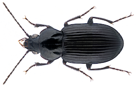

🪲Beetles (Coleoptera)

Beetles make up the largest order of insects, with more than 350,000 known species. They are recognized by their hardened forewings (elytra) that cover and protect the delicate hindwings and abdomen. This feature gives them a tough, armored look and helps them survive in many environments, from forests to deserts. Beetles can vary greatly in size, color, and habits, ranging from tiny grain beetles to massive stag beetles with impressive jaws.
Many beetles play important ecological roles. Some, like ladybugs, are beneficial predators that feed on crop pests such as aphids. Others, such as dung beetles, recycle nutrients by breaking down animal waste. However, certain species like the Colorado potato beetle or Japanese beetle are major agricultural pests. Their diversity and adaptability make beetles one of the most successful groups of insects on Earth.
Image by URSchmidt - Own work, CC BY-SA 4.0, https://commons.wikimedia.org/w/index.php?curid=70137401.
🐛True Bugs (Hemiptera)

True bugs include a wide range of insects such as stink bugs, cicadas, aphids, and water striders. Unlike beetles, their forewings are partly hardened and partly membranous, and they possess distinctive piercing-sucking mouthparts. These mouthparts are adapted for feeding on plant sap, blood, or other insects. Many true bugs have scent glands that produce strong odors as a defense mechanism, which is why some are called "stink bugs."
True bugs are found worldwide and occupy a variety of habitats, including plants, soil, and water. While some species are harmless or even beneficial predators, others are destructive agricultural pests that weaken plants by draining their sap. Certain bugs, like bed bugs and kissing bugs, can also affect humans directly by biting or transmitting diseases.
Image created by user B. Schoenmakers at Waarneming.nl, a source of nature observations in the Netherlands. - This image is uploaded as image number 29046158 at Waarneming.nl, a source of nature observations in the Netherlands.This tag does not indicate the copyright status of the attached work. A normal copyright tag is still required. See Commons:Licensing for more information. This site now requires authentication, however, the same image and copyright information is also available via https://world.observation.org/foto/view/29046158 since it uses the same data, CC BY 3.0, https://commons.wikimedia.org/w/index.php?curid=92410673.
🦋Butterflies & Moths (Lepidoptera)

Butterflies and moths are some of the most recognizable insects thanks to their large, often colorful wings covered in tiny scales. These scales give their wings shimmering, patterned appearances and are one of the defining traits of this group. Butterflies are usually active by day, while moths are mostly nocturnal, though there are exceptions. Both undergo complete metamorphosis, with a dramatic transformation from caterpillar to winged adult.
As caterpillars, they primarily feed on leaves, sometimes causing damage to crops and plants. As adults, butterflies and many moths are important pollinators, transferring pollen as they sip nectar from flowers. They are also ecologically vital as food sources for birds, bats, and other animals. Their beauty and ecological importance make them a favorite group for nature enthusiasts and scientists alike.
Image by Didier Descouens - Own work, CC BY-SA 4.0, https://commons.wikimedia.org/w/index.php?curid=19303857.
🪰Flies & Mosquitoes (Diptera)🪰

Flies and mosquitoes belong to the order Diptera, meaning "two wings." Unlike most other insects, they have only one functional pair of wings; the hind pair has evolved into tiny balancing organs called halteres. This adaptation gives them incredible agility in flight. Their mouthparts vary widely: some species have sponging mouthparts (like houseflies), while others have piercing-sucking ones (like mosquitoes).
These insects are among the most ecologically and medically significant. Many flies are decomposers, helping break down waste and recycle nutrients. Mosquitoes, however, are infamous as disease vectors, spreading malaria, dengue, and other illnesses. Despite their negative reputation, flies and mosquitoes are essential in ecosystems, serving as pollinators and as a major food source for many animals.
Image created by user Dick Belgers at Waarneming.nl, a source of nature observations in the Netherlands. - This image is uploaded as image number 5105758 at Waarneming.nl, a source of nature observations in the Netherlands.This tag does not indicate the copyright status of the attached work. A normal copyright tag is still required. See Commons:Licensing for more information. CC BY 3.0, https://commons.wikimedia.org/w/index.php?curid=27659589.
🐝Bees, Wasps, Ants (Hymenoptera)

Bees, wasps, and ants are a diverse group known for their complex behaviors and social structures. Many species live in colonies with distinct roles for workers, queens, and males. Bees are especially famous for pollination, producing honey, and communicating with each other through dances. Wasps are often predators or parasitoids, while ants are skilled builders and cooperative foragers.
This group has a huge ecological impact. Bees and wasps contribute to pollination, supporting food crops and wild plants. Some wasps help control pest populations by preying on or parasitizing other insects. Ants are critical soil engineers, aerating the ground and recycling nutrients. While stings and aggressive behaviors make some species feared, they are vital players in natural and agricultural systems.
Image by Trounce - Own work, CC BY-SA 2.5, https://commons.wikimedia.org/w/index.php?curid=1997709.
🕷️Spiders (Araneae)

Spiders are arachnids, not insects, and are easily distinguished by their eight legs and lack of antennae. Almost all spiders are predators, using venom and silk to capture prey. Many build intricate webs to trap insects, while others are active hunters that chase or ambush their food. Their silk is an incredibly strong and versatile material, used for webs, egg sacs, or safety lines.
Spiders are found in nearly every habitat on Earth, from deserts to caves to homes. While some people fear them, very few species pose a danger to humans. In fact, spiders are highly beneficial because they help control insect populations, including pests. They play a crucial role in balancing ecosystems, making them one of the most important non-insect "bugs" people commonly encounter.
Image by AJC ajcann.wordpress.com from UK, CC BY-SA 2.0 https://creativecommons.org/licenses/by-sa/2.0, via Wikimedia Commons.